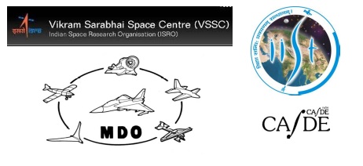

Last date of registration extended to 9th December, 2016.
Organisers:

The flyer for both the events can be found here.
(18, 19 & 20 January, 2017)
The Workshop is conceived, designed and delivered jointly by researchers from academia and professionals from the industry.
Young engineers who are involved in the design of engineering systems.
Middle level designers who do not have any formal exposure to design optimization
Attendee shall be reasonably tech-savvy in using computers and in using new applications and shall report for the workshop with a laptop or can share a laptop with one other delegate.
The workshop shall be outcome oriented as opposed to content driven. A delegate who undergoes this 3-Day workshop shall be able to do the following:
1) See the design problem (s)he is working on as an Optimization Problem
2) Cast the design problem (s)he is working on as an Optimization Problem
3) Use an open-source Optimization frame work to pose and solve his/her design problem.
4) Present results of his design exercise for the benefit general community.
5) Appreciate how ‘his/her design’ is just an element of a larger system and the need for optimizing the system rather than the element.
6) Appreciate a few main issues/complexities involved in System Design through MDO
Apart from the theory sessions outlined below, there will be hands-on
session every day. This will consist of illustrative optimisation test
problems in Julia clarify key concepts from
the theory sessions. Julia is used as a high-level interface to access
various industry standard opensource optimisation libraries.
| Day | Session | Topic | Speaker |
|---|---|---|---|
| 1 | 1 | Introduction | |
| 1 | 2 | Optimality Conditions | |
| 1 | 3 | Gradient Methods & Associated Complexities | |
| 2 | 1 | Genetic Algorithms | |
| 2 | 2 | Multi-Objective Optimisation | |
| 2 | 3 | Surrogate Modelling | |
| 3 | 1 | Introduction to MDO | |
| 3 | 2 | MDO Architectures | |
| 3 | 3 | MDO Case Studeis |
(21 & 22 January, 2017)
Special Interest Group on MDO (SIG-MDO) is a group of people drawn from various organizations in India and whose activities are coordinated by ARDB Centre for Aerospace Systems Design & Engineering, IIT Bombay, Mumbai. SIG-MDO meets frequently (once in a year or in two years) to offer a platform for professionals to talk about MDO problems that they have tackled or are tackling or even formulating.
Technology heads, Project Directors
Researchers in the area of Design Optimization
Listen to technology heads, project directors on how they have posed complex design problems and exploited optimization to solve them
Listen to researchers on research problems they are tackling
Listen to design service providers on their capability
There is no registration fee for those working for Government or Non-profit organisations.
Registration fee for those working for For-Profit organisations is Rs 25,000.
Registration fee does not include lodging/boarding charges and local conveyance (pick-up/drop from airport/railway station etc.).
Rs 5,000 for participants from government or Non-Profit organisations
Rs 25,000 for participants from For-profit organisations
lodging/boarding charges
local conveyance (pick-up/drop from airport/railway station etc.).
Registered delegates to the 3-Day Workshop are strongly encouraged to attend the 2-Day SIG-MDO meeting on ensuing 2 days at no extra registration fee.
Registration fee may kindly be remitted by Demand Draft drawn in favour of “Registrar, IIST” payable at Thiruvananthapuram.
1) Prof Devendra Ghate, Visiting Faculty, Dept of Aerospace Engineering, IIST
2) Dr Pankaj Priyadarshi, Head ADSD, Aero Entity, VSSC, ISRO
3) Dr Indira N, MSRSAS, Bangalore
4) Dr AS Shaja, Bangalore
5) Prof K Sudhakar, IIT Bombay (Retired)
1) Dr Kota Harinarayana, DRDO (Retired)
2) Prof. PM Mujumdar, Dept of Aerospace Engineering, IIT Bombay, Mumbai
3) Prof Hemendra Arya, ARDB CASDE, IIT Bombay, Mumbai.
4) Prof Kurien Isaac, Senior Professor, Dept of Aerospace Engineering, IIST
5) Dr. V K Dadhwal, Director, IIST
6) Shri. S Padian, Deputy Director, AERO, VSSC, ISRO
7) Dr. V Ashok, Group Director, ADTG, VSSC, ISRO
For DoMDO workshop related queries : domdo@casde.iitb.ac.in
For SIG-MDO related queries : sig-mdo@casde.iitb.ac.in
Prof Devendra Ghate: devendra.ghate@iist.ac.in
Prof K Sudhakar: sudhakar.iitb@gmail.com Mob. 8111850987